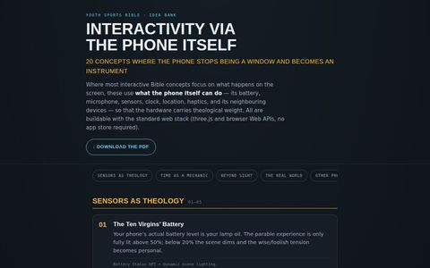
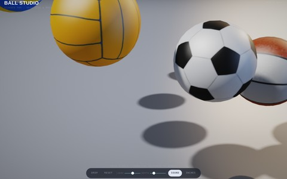

Brainstorm
Ideas
A brainstorming list on possible ways to engage young people with the Bible. Not all are useful, but have been helpful as a springboard.
Example 48
Interactive Bible Ideas
Brainstorming different ideas of what might be possible in the Youth Sport Bible. Not all valid, but a helpful thought starter.
48
Example 49Interactivity Via the Phone Itself
Brainstorming ideas that use the capability of a phone to assist with interactivity. Not all useable but helpful to stretch thinking.
49
Example 50Ball Studio
Not a brainstorm. But it’s fun and gets us to 50! A play with sport balls and using glf files to create nicely rendered balls with physics. Will be useful to have for various other pages.
50